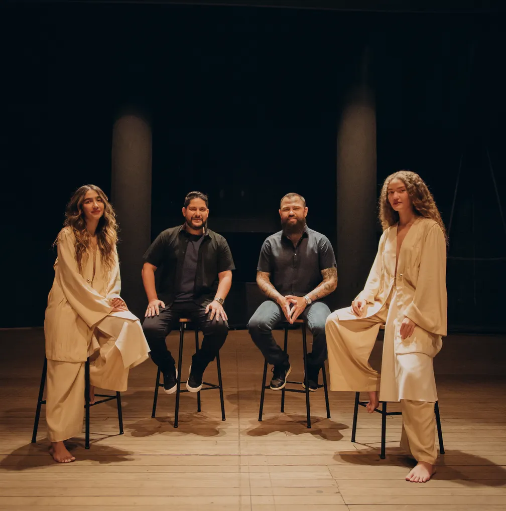
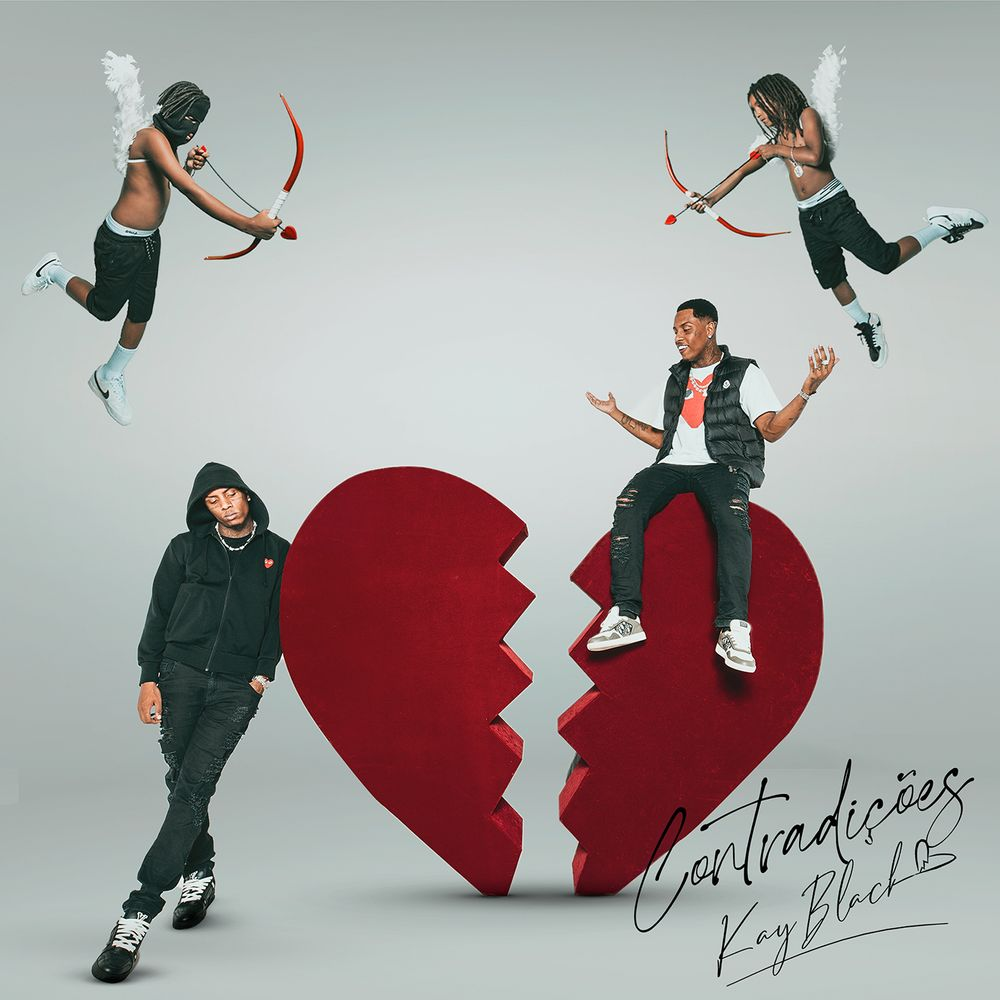
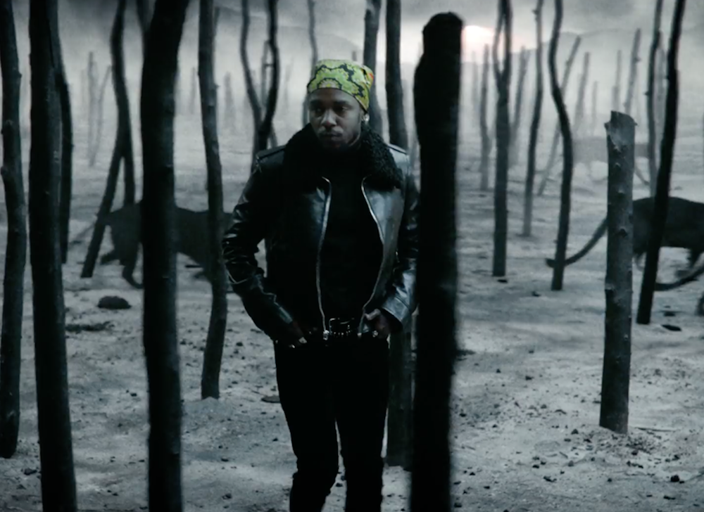
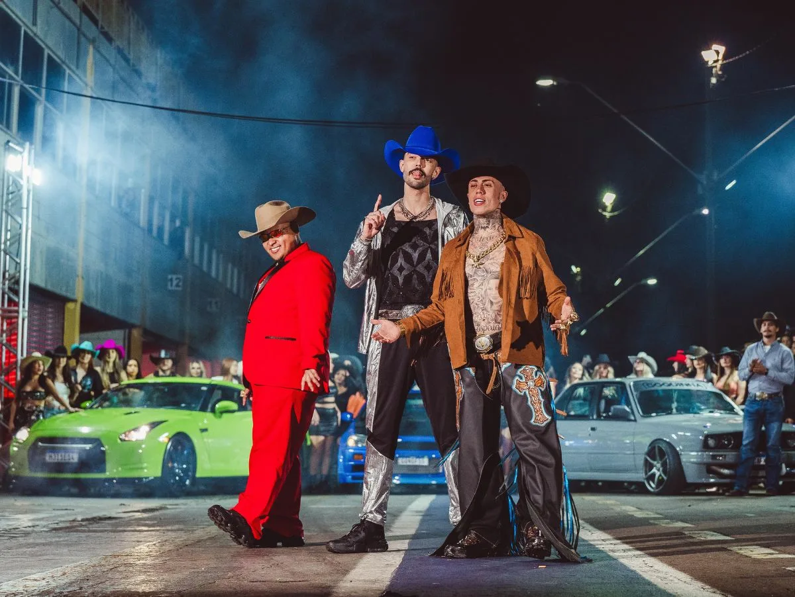
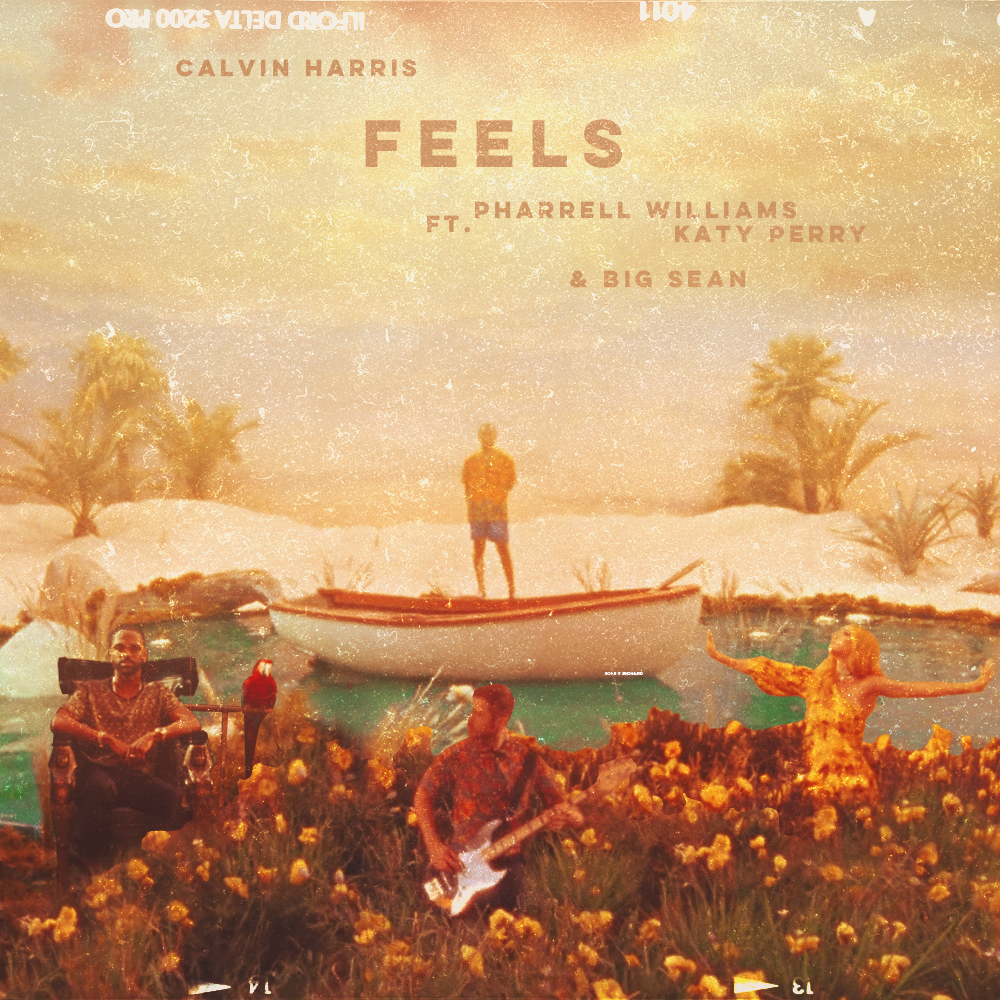

Escolhas - Ana
Eu sosseguei - Andrei
Quem não conhece tá sem intrnet - Caiuri
put your head on my shoulder - Douglas

Vestido de Seda - Eduardo A.

Um pedido - Eduardo D.
Caso indefinido - Érica

- Felipe
Rosas, Versos e vinho - Gabriela

Geleira do Tempo - Gabrieli

Segredo - Gislaine

Banco do carona - Guilerme C.
Flauta da Safadeza - Guimelez
Assino com X - Gustavo
Pride - Izabelly
Barbie-Girl-PHONK - Jaiminho
Halls na Língua - João V.
Paredes - Laura
Samara
Bota na Pipoquinha - Tata

All The Stars - Valentina

Dentro da hilux - Jaqueline
